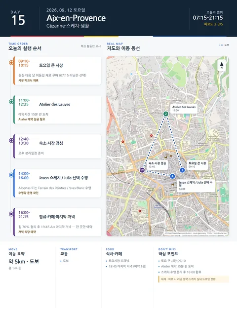

Day 15 · 9/12 토 · Aix

- 핵심 실행
- 시장·Cézanne·스케치
- 권장 출발
- 08:30 시장
- 완충
- Atelier 전 30분
- 예약
- 1건 — 완료 0 · 미확정 1 · 현황
시간표
| 시간 | 일정 | 실행 포인트 |
|---|---|---|
| 07:15–08:00 | Jason 선택 러닝 | 피로가 남으면 생략 |
| 09:10–10:15 | 토요일 큰 시장 | 점심·이동일 재료구매 |
| 11:00–12:30 | Atelier des Lauves — 가이드 90분 | 11:00 은 가이드 회차(€12)다. 자율관람 €9.50 은 11:30부터라 이 시간에 성립하지 않는다. 예약시간 15분 전 도착 |
| 12:40–13:30 | 숙소·시장 점심 | 오후 분리일정 준비 |
| 14:00–16:00 | Jason 스케치 / Julia 선택 수영 | Albertas·Terrain / Yves Blanc |
| 16:00–18:10 | 합류·카페·이동간식 | 짐 70% 정리 |
| 19:45–21:15 | Aix 마지막 저녁 | 한 곳만 예약 |
피로도
2–3/5
이 날의 장소
일자별 시간표와 본문 표기에서 찾은 것이다. 하루의 전부가 아니라 장소 카드가 있는 것만 담는다.
이 날의 메모
시장, Atelier de Cézanne, 스케치와 선택 수영
- 오늘의 결론: 이번 4박에서 가장 중요한 생활형 완충일이다.
실행 시간표
상세 실행 확인
- 최고 리스크
- 주말혼잡·개인일정 충돌
- 우선 삭제
- 러닝·쇼핑
- 대체안
- 실내 드로잉·카페
- 식사·휴식
- 시장점심
- 잠금 필요
- Atelier·수영
Google 실행지도
Atelier des Lauves — 세잔의 아틀리에
지도 펼치기
지도는 펼칠 때만 불러옵니다.
Daily Action Map

실제 좌표와 OpenStreetMap을 사용한 실행용 요약입니다. 도로·대중교통 상황은 출발 직전에 다시 확인하세요.